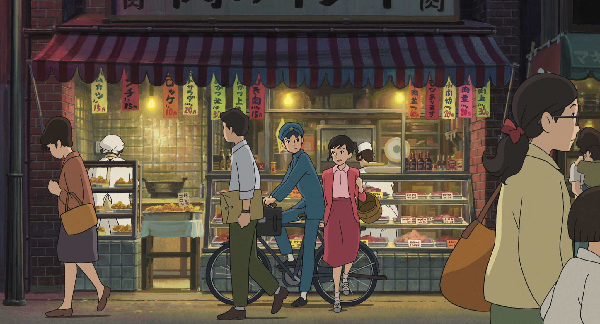

La storia è ambientata a Yokohama nel 1963, un anno prima dei giochi della XVIII Olimpiade di Tokyo, che furono il segnale della avvenuta ricostruzione del Giappone dopo la guerra e sancirono il definitivo riconoscimento internazionale della nazione. Umi è una ragazza di 16 anni, suo padre è morto in mare durante la guerra di Corea, quando la sua nave ha urtato una mina. Sua madre invece è docente universitaria negli Stati Uniti[5] ed è spesso assente per lavoro. La ragazza vive quindi con la nonna e i fratelli minori in una grande casa ricavata da un ex ospedale, costruito sulla "collina dei papaveri" che domina il porto. Nella casa, oltre a loro, abitano anche tre ragazze pensionanti. Umi ogni mattina issa due bandiere di segnalazione marittima che significano "prego per una navigazione sicura", così come le aveva insegnato il padre da piccola. Shun è un ragazzo di 17 anni ed ogni mattina arriva al porto sul rimorchiatore del padre adottivo per poi andare a scuola. Vede sempre quello strano rituale con le due bandiere che si ripete giorno dopo giorno e ne è talmente incuriosito da scriverci una poesia (una sorta di "messaggio in bottiglia" verso la misteriosa ragazza delle bandiere) che pubblica sul giornale della scuola. Umi e Shun si incontrano per la prima volta a scuola, nel corso di un'azione di protesta che vede protagonista il ragazzo e che lascia ad Umi un'impressione piuttosto negativa. I due si incontrano di nuovo quando Umi accompagna la sorella minore a chiedere un autografo a Shun, e scopre che il ragazzo fa parte del club di letteratura ed è il responsabile della pubblicazione del giornalino scolastico. Umi finisce per entrare nel club come copista, per aiutare Shun, il quale è dolorante a una mano a causa del graffio di un gatto. Intanto la scuola è in fermento per le accese discussioni che si scatenano circa la necessità di salvare o meno dalla demolizione il "Quartier Latin"[6], un edificio adibito a sede dei club scolastici, carico di storia e di ricordi ma ormai vecchio e fatiscente. Il Giappone si sta velocemente modernizzando e per il vecchio edificio non c'è più posto: ormai la dirigenza della scuola ha deliberato per la sua demolizione, ma una parte degli studenti preme per salvaguardare la struttura e la storia che rappresenta. Su iniziativa di Umi molti studenti si rendono disponibili a ristrutturare l'edificio e restituirlo alla sua vecchia gloria. Durante i lavori la ragazza ha modo di approfondire la conoscenza di Shun e i due cominciano a sviluppare dei sentimenti di affetto reciproci. Umi racconta a Shun di suo padre e della sua morte, mostrandogli una fotografia dell'uomo. Il ragazzo però rimane stupito nel vedere in mano all'amica la stessa foto che possiede anche lui e, dopo una serie di ricerche, arriva a scoprire la verità sul suo conto: il suo vero padre è proprio il padre di Umi, che lo ha affidato ai suoi attuali genitori adottivi quando era ancora in fasce. La nuova rivelazione rende i due ragazzi di fatto fratello e sorella e Shun si allontana da Umi per evitare coinvolgimenti ulteriori. Da principio la ragazza è disorientata dal repentino cambiamento dell'amico, ma quando il ragazzo le rivela i suoi dubbi, ella non può fare altro che accettare la situazione. Dopo un grande impegno collettivo gli studenti completano la ristrutturazione del "Quartier Latin", ma sono delusi e amareggiati quando ricevono la notizia che Tokumaru, un influente sponsor della scuola, ha già preso la decisione di demolire il vecchio edificio per far posto ad una nuova struttura. Nel disperato tentativo di prevenire la demolizione, gli studenti nominano Shun, Umi e Shirō come loro rappresentanti per andare a Tokyo a persuadere Tokumaru a cambiare idea. I tre convincono il magnate a venire ad ispezionare il "Quartier Latin" di persona. Nel mentre Umi e Shun aspettano il tram per tornare a casa, la ragazza confessa che nonostante siano fratelli lei non potrà mai ignorare i sentimenti che prova per lui. Anche il ragazzo dichiara la stessa cosa. Intanto la madre di Umi torna dall'America, e la ragazza si confronta con lei per scoprire la verità circa il passato di Shun. La donna le rivela che il ragazzo non è il figlio biologico del padre di Umi, ma che era stato registrato come tale per prevenire che potesse essere messo in orfanotrofio in seguito alla morte del suo vero padre durante la guerra di Corea. I genitori di Umi, poi, non avevano potuto tenere il bambino, dal momento che la madre era incinta e non si poteva occupare di un altro figlio, così lo avevano dato in affidamento ad una coppia di amici che avevano appena perso il loro bambino. Questi sono i reali genitori adottivi di Shun. Il giorno seguente Tokumaru visita il "Quartier Latin" e rimane positivamente sorpreso dall'attaccamento degli studenti all'edificio, dal loro impegno nella ristrutturazione e dalla loro preparazione scolastica. Decide perciò di abbandonare i suoi progetti di demolizione e di costruire il nuovo edificio in un'altra zona. Nel frattempo Umi e Shun hanno dovuto lasciare in fretta e furia la scuola per incontrarsi con Onodera, il capitano di una nave in partenza dal porto di Yokohama, che è in possesso di informazioni dettagliate sui genitori dei ragazzi. Egli racconta che conosceva bene i due uomini, e che ai tempi della guerra con lui formavano un trio inseparabile, inoltre conferma che i due giovani non sono imparentati. Chiarito il loro passato i due tornano alla loro vita quotidiana mantenendo il loro forte rapporto di affetto e la loro amicizia, e Umi continua nell'abitudine di issare le bandiere tutte le mattine.